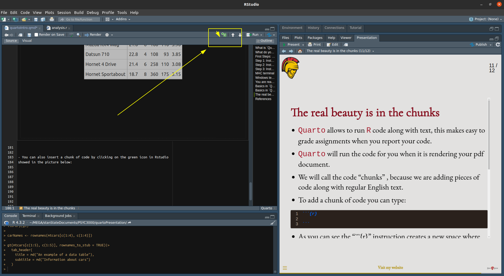

Quarto is a multi-language software that will help you to create static or dynamic documents.
Quarto is a like a toolbox, inside the toolbox you will find Html code, JavaScript code, and Pandoc utilities.
But good news! You don’t have to know all these programming tools and languages to use Quarto in R.
Quarto will do everything for you behind scenes.
What do you need to know for this class?
You will only need to learn how to create pdf files via Quarto in R.
First Steps: Install software
Step 1: Install R and Rstudio
Follow these instructions to install R and then install RStudioCLICK HERE
Step 2: Install Quarto
You will need to go to Quarto's website and download the appropriate installer for you computer CLICK HERE
It is likely that you have a Mac computer or a Windows computer, select the correct installer accordingly.
Step 3: Install tinytex
tinytex is a package created by the Quarto developers to compile Latex (It is pronounced “Lay-tech”) code.
Latex is a markup language that was created before the word processors were invented, but it is still use to create pdf’s because it remains very useful.
You won’t need to learn how to write Latex code. Quarto does it for you, you only need the engine to process the code, this is where tinytex is important.
To install tinytex you will have to type quarto install tinytex in your Windows terminal or Mac terminal, Windows also call it “command prompt”. “command prompt’. Don’t forget to press enter after writing the command on the terminal.
Quarto is using markdown to specify what do you want to display in your document. This is something call a “markup language”. This means that you give instructions in a specific format, and the software creates the document in pdf.
Quarto will need a header. We can study the following example:
The example above is a YAML header, it has meta information such as:
-Title: Title of the document.
-author: the author of the document.
-date: you may specify a date or just use the shortcut “now”.
-date-format: the format you would like to use to display the date.
Basics in Quarto II
After you add the header at the beginning of the document, you can start writing the content of the document following these rules:
Pound sign (#) will help you to create sections.
One pound sign is section level 1, two pound signs is a second level section, and three pound signs are third level section.
You can use asteriks to create *italics*, this is **bold** , and this is ***bold and italics***.
You can check this link to read more about more options in Markdown rules.
The real beauty is in the chunks
Quarto allows to run R code along with text, this makes easy to grade assignments when you report your code.
Quarto will run the code for you when it is rendering your pdf document.
We will call the code “chunks” , because we are adding pieces of code along with regular English text.
To add a chunk of code you can type:
```{{r}}```
As you can see the “```{r}” instruction creates a new space where you can type your R code.
For example, we can run the following code and get the output along with our text:
library(gt)gt(mtcars[c(1:5), c(1:5)], rownames_to_stub =TRUE)|>tab_header(title =md("An example of a data table"),subtitle =md("Information about cars") )
An example of a data table
Information about cars
mpg
cyl
disp
hp
drat
Mazda RX4
21.0
6
160
110
3.90
Mazda RX4 Wag
21.0
6
160
110
3.90
Datsun 710
22.8
4
108
93
3.85
Hornet 4 Drive
21.4
6
258
110
3.08
Hornet Sportabout
18.7
8
360
175
3.15
The real beauty is in the chunks
You can also insert a chunk of code by clicking on the green icon in RStudio showed in the picture below:

A good example
This is an example of a full Quarto document that will render a pdf document, you can copy the code and render the file in your computer using RStudio:
---title: "Practice #1"author: "Jacinto Paredes"date: nowdate-format: longformat: pdfeditor: visual---# How to use this template?I'm providing this template to complete future practices and assignments. It is not mandatory to complete any assignment using `Quarto`. Delete from this template any unnecessary information. I'm writing some details about `Quarto` for the sake of learning.You may ***render*** this `Quarto` file to check how the pdf looks like. ## Exercise 11. Now is your turn to create your own object. Copy my code an replace the names with names of countries. Then, call the object to print the content in the console. Copy your answer in a Word document or Google document. (8.33 points)```{r}### Write here your R code to answer the question```## Exercise 22. Do the same with your object containing names of countries. Print only the first and the third element of your object. (8.33 points)```{r}### Write here your R code to answer the question```## Exercise 33. Create a numeric vector with the years of Marvel movies corresponding to *The Infinity Saga* reported in this link [CLICK HERE](https://en.wikipedia.org/wiki/List_of_Marvel_Cinematic_Universe_films){target="_blank"}. After that, print only the elements located in positions 5,8, and 9. (8.33 points)```{r}### Write here your R code to answer the question```## Excercise 44. Copy the code above, replace the `+` sign for a `-` (minus) sign. Then run the code, What happened when you did that ? (8.33 points)```{r}### Write here your R code to answer the question```## Excercise 55. Create a data frame object by copying the code below. Change the object’s name, you may named it “expenses”, then change the variable names in the example (e.g. `variable1`). Finally run the code. How many rows does this data frame have? How many columns does this data frame have? Can you tell what happened after running the function `head()` (8.33 points)```{r}### Write here your R code to answer the question```## Excercise 66. You probably went to the link I recommended before, if not go a read it [here.](https://blackhill86.github.io/StatsBook/functionsPack.html){target="_blank"} After reading the explanation about packages install the package `tidyverse` then, call the package. You can copy the following code and paste the code in your RStudio session. Remember to install the package first.```{r}### Write here your R code to answer the question```
A good example II
After rendering the Quarto example, the pdf file looks like this one: CLICK HERE